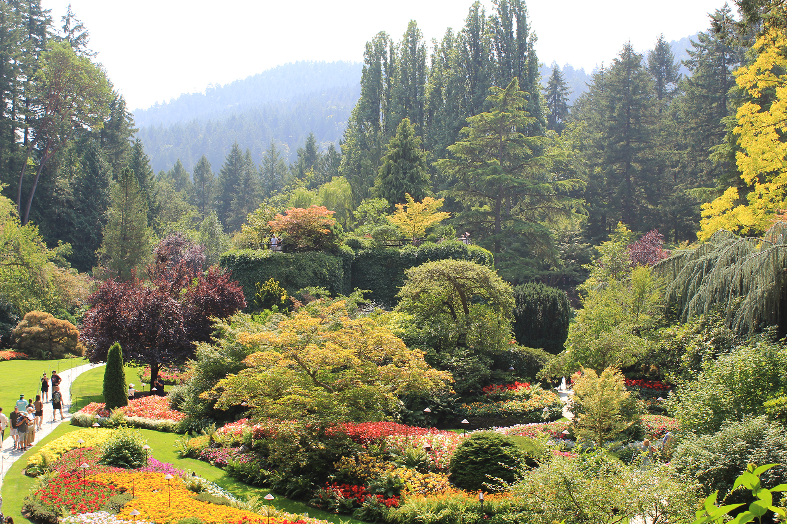
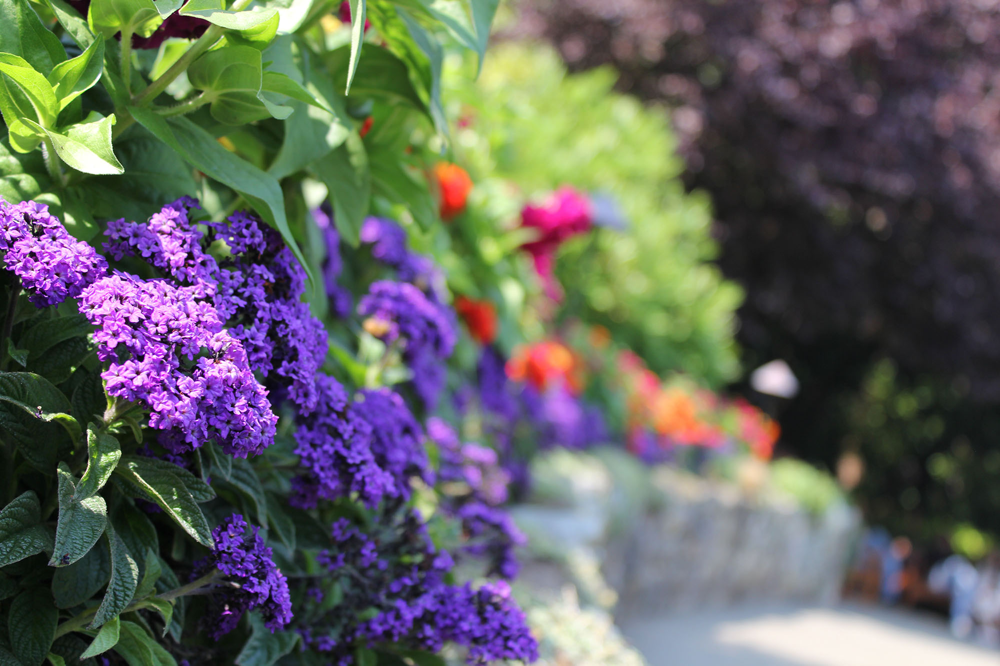

As you enter the gardens through the small forest just outside Brentwood Bay, you're greeted with flora more vibrant than you've ever seen. The verdant blooms sit in neatly kept beds in the former Butchart estate along the Saanich Inlet of Vancouver Island leaving a nice, temperate climate for foliage year-round.
The Sunken Garden, built on an old limestone mine, sits lower than the rest of the estate and surrounded in large cedar trees, leaving a striking impression as a hidden grove that only you have the pleasure of seeing. The Rose Garden boasts a more open view to flaunt its stunning bouquet more openly. And the Japanese gardens make an excellent use of water, bringing focus to its proximity to the ocean without you even realizing it through the streams flowing between the Japanese maples.
